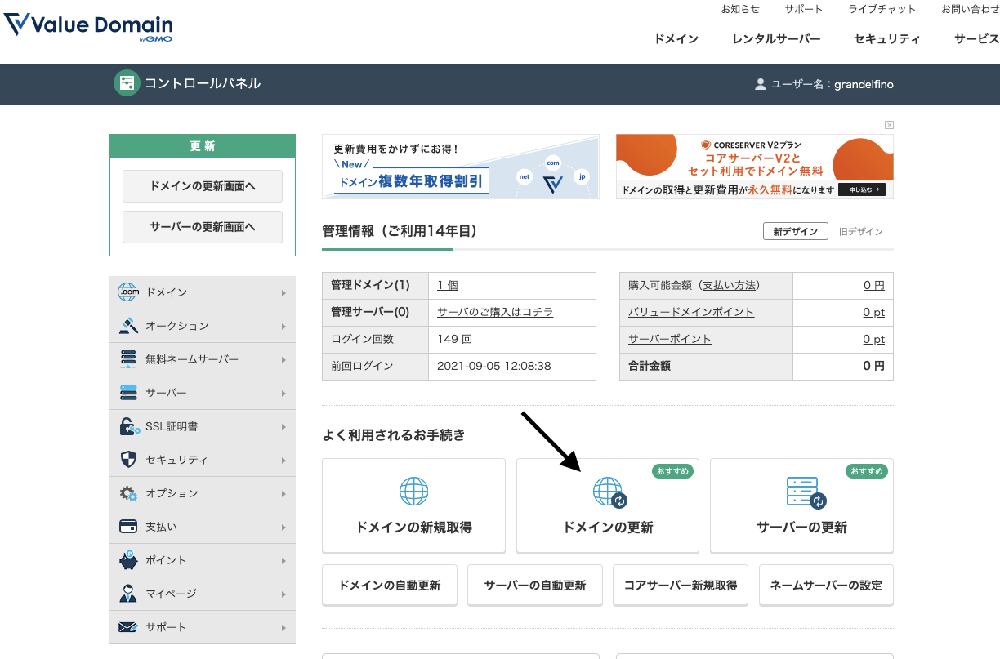
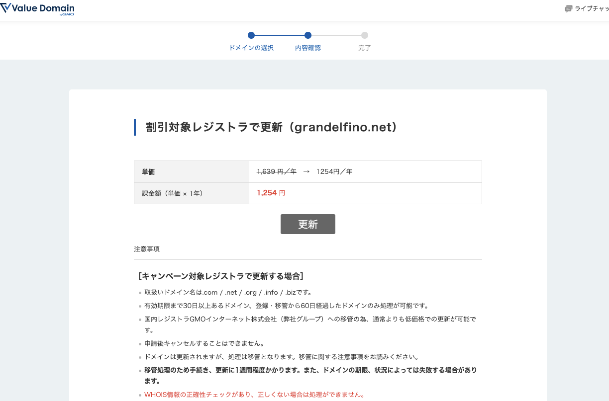
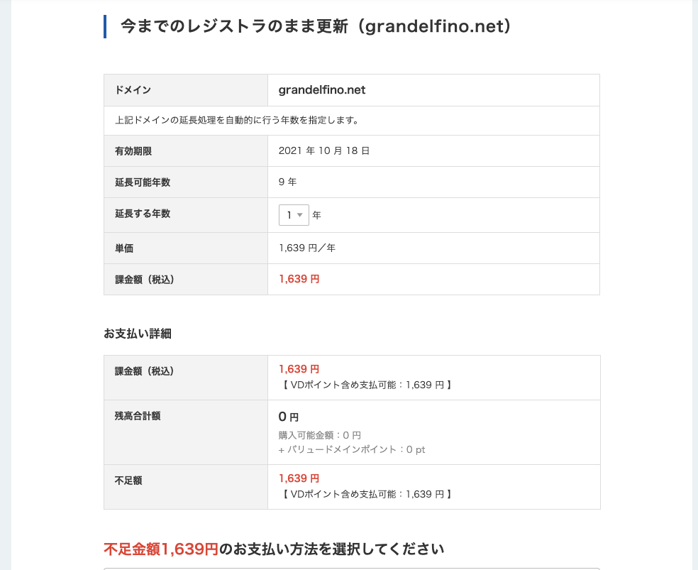

ドメイン管理
チームでは Valuedomain というサイトからドメインを購入しています．
大会後の10月頃にドメインの期限が来るので，その一ヶ月前を目処に更新をお願いします．
また，ログイン情報はここにあります．
更新作業
Valuedomain のサイトにアクセスし，ログインしてください
- コントロールパネルと表示されたページから，ドメインの更新を選択してください 
- 現在購入しているドメインが表示されるので，grandelfino.netを選択してください．
- ドメイン有効期限の30日以上前であれば，割引された料金で更新することができます． 
- そうでない場合は通常料金の支払いが求められるので，銀行振込にて決済を行なってください．
- 支払いに関しては，その時の会計担当の指示を仰ぐようにしてください． 
その他の設定項目
ドメインについては以下の設定を行なっています．
以下の内容は，特に変更する必要はありませんが，メモ程度に残しておきます．
ネームサーバーの設定
ホームページおよびブログを稼働させているサービスであるNetlifyとこのドメインを紐づけるため，以下のネームサーバーへ変更しています．
- dns1.p07.nsone.net
- dns2.p07.nsone.net
- dns3.p07.nsone.net
- dns4.p07.nsone.net
基本的に変更する必要はありませんが，うまくサイトが表示されない場合や別のサーバーへと移管する場合は修正，変更してください．
DNS設定
DNSには，ホームページとGoogleAnalyticsを連携させるために設定を行なっています．
WHOIS情報
ドメインのWHOIS情報として，(おそらく)ドメインを取得した時に，OBである北山さんの名前と，チームの組織名，住所などが登録されています．